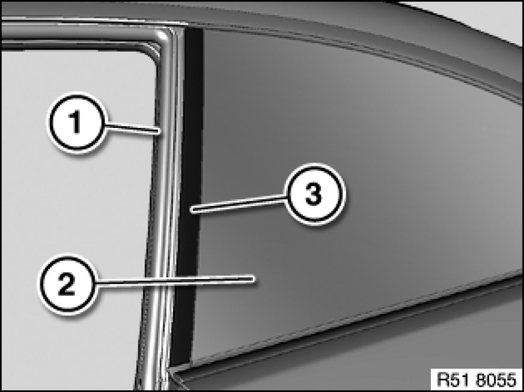
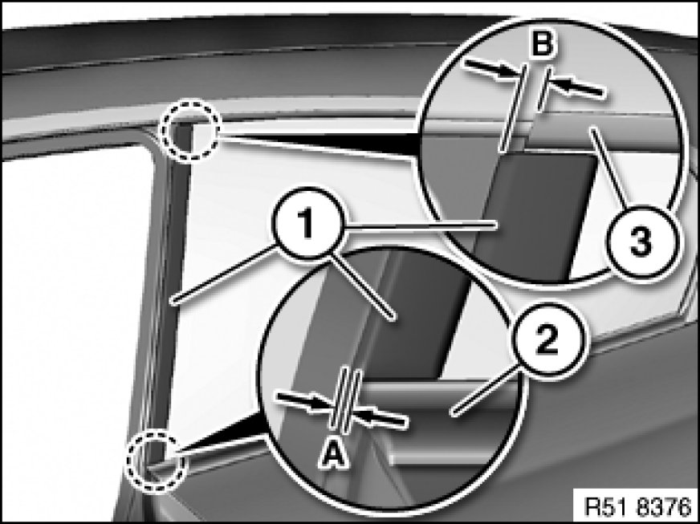

Quarter Window Glass: Service and Repair
51 36 047 - Replacing trim on rear left or right side window

Special tools required:

Important!
The Instructions on component cementing with double-sided adhesive tape serve as the basis for this repair instruction and must be observed without fail.

Remove trim:
Release door seal (1) in area of side window (2).
Heat trim (3) with hot air blower and detach with special tool 00 9 317 from bumper (2).

Fitting trim:
Pretreat adhesive area of cleaned side window with Sika Cleaner 205.
Important!
Treat only adhesive area of side window with Sika Cleaner 205.
If Sika Cleaner 205 is applied to the visible area of the side window, this will create a gleaming lining which suggests a separation of the ceramic layer.

Pull liner* off trim (1).
Place bottom trim (1) on PVC moulding (2) according do dimension (A).
A= - 0.5 ± 0.5 mm
Place top trim (1) on PVC moulding (3) according do dimension (B).
B= - 3.5 ± 0.5 mm
Press down trim (1) with firm thumb pressure over entire adhesive area.
*Liner is the protective film on adhesive tape.